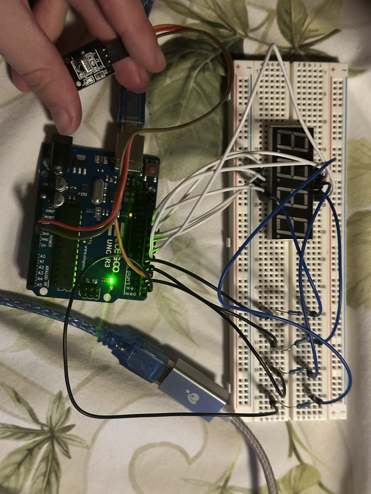
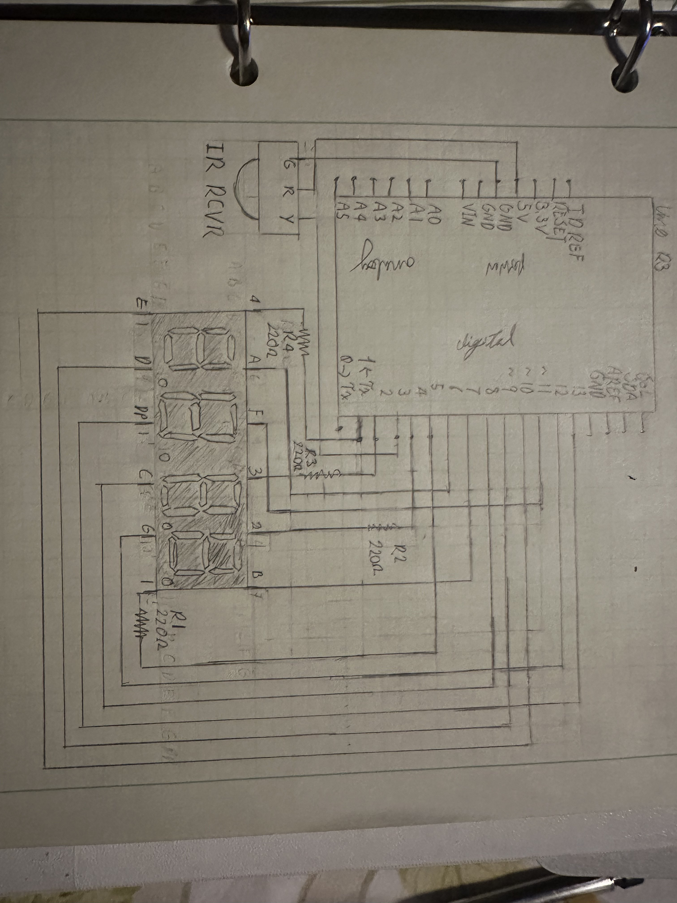
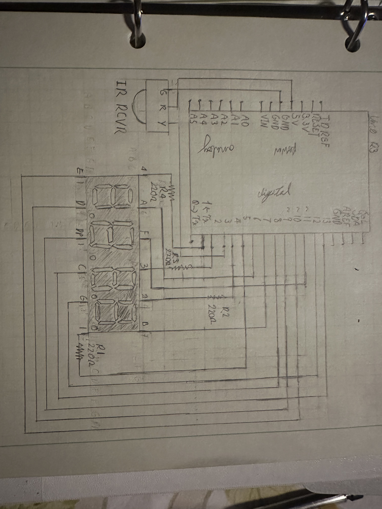
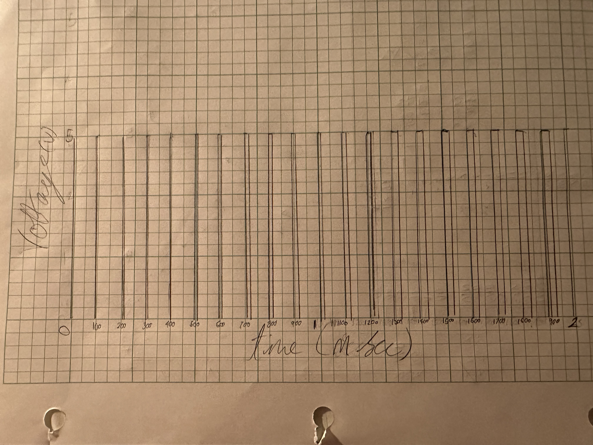

Skye's Assignment 4: Libraries!

 

The data sheet for the seven segment dispaly said the forrward current is 20 mili amps so i used a 220 ohm resistor as it was the closest single resitor I could use to get close to that amperage with the 5V. I used only 4 resistors because the digital pins ground the other pins connecting to the seven segment displays and it makes no difference the order of the resistor and the components as long as they are in series.
Code:
// used Dean Reading's sevseg libary, v3.7.0 and example code as referance. Uses IRremote libary by shirriff, z3to, and ArminJo
#include < IRremote.h > //includes the IRremote libary
#include < SevSeg.h > //includes the sevseg libary
SevSeg sevseg; //initiates the display
int IR_RECEIVE_PIN = 3; //initiates pin and sets it to variable name
int displayValue = 0; //crates global variable named displayValue and sets it to 0
void setup() //start of code I want to run once
{
byte numDigits = 4; //input for the number of 7 segment displays being used
byte digitPins[] = {1, 2, 4, 5}; // input for the pins being used for the digital pins
byte segmentPins[] = {6, 7, 8, 9, 10, 11, 12, 13}; // input for the pins being used for the LED segments
sevseg.begin(COMMON_CATHODE, numDigits, digitPins, segmentPins); //sets up the information needed to use the SVG libary, telling it the setup of the display and pin information for future use
sevseg.setBrightness(10); // sudjested amount by Dean Reading due to update rate
IrReceiver.begin(IR_RECEIVE_PIN, ENABLE_LED_FEEDBACK); // starts the reciver and allows it to recieve input
void loop() //start of code I want to repeat
{
IrReceiver.resume(); //keeps the reciver detecting input
if (IrReceiver.decodedIRData.command == 0x46) { //if volume up is pressed run the following code
displayValue = displayValue + 1; //makes the displayvalue value one more
sevseg.setNumber(displayValue,0); //sets the value displayed to be the value stared in displayValue with a decimal point at the 0 position
} else if (IrReceiver.decodedIRData.command == 0x15) {//if volume down is pressed run the following code
displayValue = displayValue - 1; //makes the displayvalue value one less
sevseg.setNumber(displayValue,0); //sets the value displayed to be the value stared in displayValue with a decimal point at the 0 position
}
}
sevseg.refreshDisplay(); // needs to run repetedly for display function
Questions:
1: Say you are using a servo motor you attach to pin 9. In your loop() you have the following code: for (int i=0, i < 180, i++){servo.write(i); delay(100);} Draw a graph with the X axis in seconds, for two seconds, and the y-axis the voltage at pin 9 with respect to ground.

The servo motor's readings are a pulse once per 20ms normally, but due to the delay the pulse would occur only every 0.1 seconds and the duty cycle would be slightly longer with each iteration until i is greater than 180.
2: Your input device is slightly broken, leading it to give us an erroneous reading 1% of the time. How can we address this? Answer in (pseudo)code.
new reading = get reading
if new reading is > 2* old reading or < 0.5 * old reading
new reading = old reading
use new reading
3: Your input device is slightly noisy, leading the measurement to randomly deviate from the true measurement up or down by 10%. How can we address this? Answer in (pseudo)code.
loop for i = 0; i >= 10 ; i++
reading i = get reading
reported reading = average of readings 0 to 9
use reported reading as reading